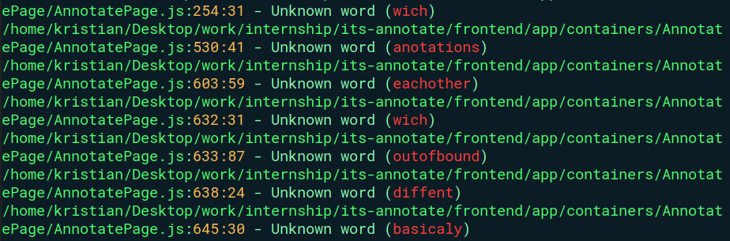
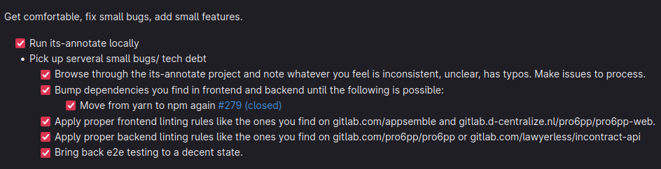
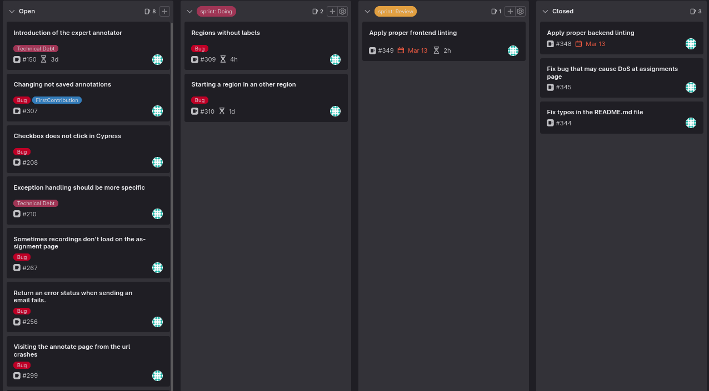
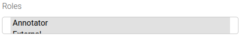
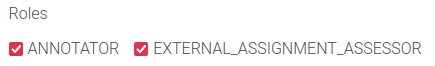
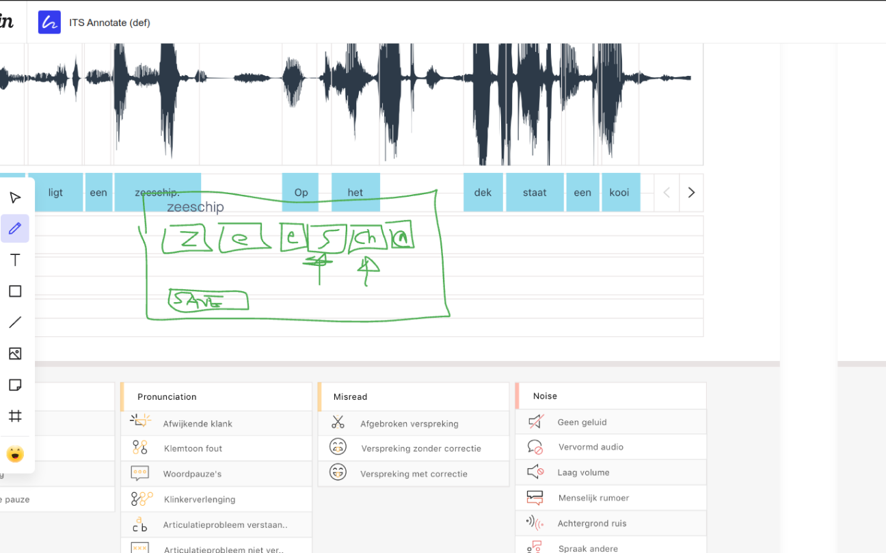
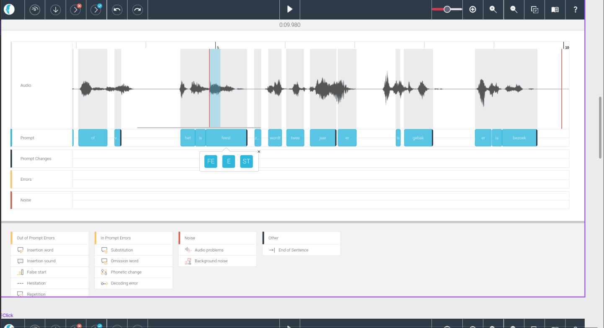
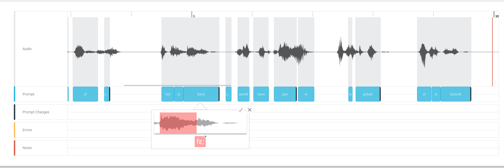

My name is Kristian Lachev, I am a twenty three year old student at Fontys university. This is my fourth year as a Fontys student. I have been through and managed to complete all the challanges that were given to me by the university. In completing those challanges I have grown not only as a developer, but also as a person who is able to think critically and operate confidently in professional environments.
I found my internship at d-centralize and applied for it, I managed to get the job and I chose the project that seemed the most interesting to me - its-annotate. Its-annotate interested me the most, because it had to do with the creation of an AI model that will be used to improve a certain sector that needs tools like this to help alleviate some of the work that is necessary and maybe even help certain people with speech impairment.
Introduction > The company
D-centralize is a company that operates from Strijp-S, Eindhoven. They build SaaS platforms that are made for an international audience. They work with Dutch and international students and focus on software quality and testing. They offer remote internships and challenging projects.
The founder of the company is Kees van den Broek and the stakeholders are the clients of the company. The company focuses on providing high quality software for their clients.
A lot of the programmers in the company are former or current Fontys students, so the workflow that they follow is reminiscent of how a very advanced Fontys university project would be built. They follow all steps of the software development process that I am familiar with like automatic testing, continuous integration and deployment, branching strategies and the use of the Agile methodology. Moreover, the software solutions that are designed by the company are decentralized meaning that they are spread into smaller systems that communicate with each other via API.
Problem/Opportunity
The problem that the company faced is that the tool they were trying to use for the improvement of the AI model had a lot of technical debt that was caused from past iterations of the project. This technical debt was causing inconsitencies in the way the company operated. A lot of bugs remained in the tool, and there was a lot of possibilities for improvement that were being halted bu the technical debt that existed in the tool.
The other problem that the company was facing was that there was not really a way to connect the annotated assignments to the AI model, so a connection needed to be made for it. This connection could be in the form of a CI pipeline or something else, but they needed it to be done. Also during my period here some of the initial plans did change, instead of building for a model that already existed the company had hired another intern to build a brand new model, that required different data. The new model needed some time to get built.
Both of these problems gave a lot of opportunity for improvement and I went on to tackle the problems the company faced during my internship.
Goal
The main goal I had for my internship was to improve upon an already existing website called its-annotate, also known as the annotator tool. The website was used as a tool by speech experts to make annotations that were used to train an AI model that could be used to predict mispronounced words. This model helped speech experts identify speech problems quicker and alleviated some of their necessary work. My secondary goal was to connect this tool to an AI model that can use the already annotate data to get trained into being accurate enough to be able to recognize mistakes in speech.
These goals that I have set for this internship would help the company by making adding more functions to its-annotate easier. Also the integration of some systems will help in recognizing problems and bugs faster. Moreover, the connection from its-annotate to the AI model, will ensure that the new model will receive the data that it needs, this could potenitally improve the model's score.
Research Questions
What are the best practices for developing frontend clients in ReactJS (Typescript), and how can these practices be integrated into the software development process?
1. Introduction
In the past few years, TypeScript has become incredibly popular among frontend developers. It offers benefits like easier code maintenance, consistent code quality, and support for past and future browsers. While many frameworks and libraries default to TypeScript, React remains neutral, allowing developers to choose between TypeScript and JavaScript based on their preferences. The objective of this reasarch paper is to focus on the best practices for developing frontend code using TypeScript, in ReactJS, and how to integrate them.
2. Type Safety with TypeScript
TypeScript's static typing feature provides a powerful way to catch and prevent errors during development. By explicitly specifying variable types, functions, and objects, TypeScript helps developers identify mistakes early on and make their code more robust.
In ReactJS (Typescript) development, interfaces and types are essential for defining the structure of components, props, and state. Interfaces allow developers to define contracts that specify the expected properties and methods of an object, while types provide flexibility in defining custom types and aliases. Using interfaces and types ensures that components receive the correct props and helps developers understand the data flow within the application.
Type safety brings several benefits to ReactJS (Typescript) development. It reduces runtime errors by catching type-related issues during compilation, leading to fewer bugs and more reliable code. Type safety also improves code maintainability by providing documentation and hints about expected data structures and function signatures.
When integrating TypeScript into the software development process, it's best to start gradually. Teams can introduce TypeScript in small parts of the codebase or new projects and then expand its usage over time, as it is in d-centralize. This approach minimizes disruption and allows developers to learn and adapt to TypeScript gradually.
By integrating TypeScript and making use of its type safety features, developers can significantly improve the reliability and maintainability of their ReactJS applications. Implementing TypeScript in the software development process gives teams the chance to write cleaner code, catch errors early, and improve collaboration among team members.
3. Code Readability and Maintainability
Code readability and maintainability are important aspects of frontend development, and this holds true for TypeScript projects as well. Readable and maintainable code improves collaboration among developers, reduces debugging time, and enhances overall development efficiency.
One effective practice for improving code readability in TypeScript is to follow consistent naming conventions. Use descriptive names for variables, functions, and types that clearly indicate their purpose and functionality. By choosing meaningful names, other developers can quickly understand the code's intent and avoid confusion. It is recommended to use camel case for variables and functions (e.g., myVariable, calculateTotal) and Pascal case for type names (e.g., MyType). Enforcing coding standards through linting tools like ESLint is another way to improve code quality and maintainability in TypeScript projects. ESLint allows developers to define and enforce a set of rules and guidelines for the codebase. These rules can detect common coding errors, enforce best practices, and promote consistency. By regularly running ESLint during development, developers can catch potential issues early and ensure that the code adheres to high-quality standards.
Additionally, documenting the code through comments and type annotations can greatly enhance its readability and maintainability. Clear and concise comments provide insights into the code's functionality, making it easier for other developers to understand and modify it. Type annotations in TypeScript serve as documentation and help developers understand the expected types and structure of variables, functions, and objects, leading to more maintainable code.
In conclusion, prioritizing code readability and maintainability is important in TypeScript frontend development. Following best practices for naming conventions, utilizing linting tools like ESLint, and documenting the code through comments and type annotations contribute to better code quality and easier maintenance. By investing in readable and maintainable TypeScript code, developers can improve collaboration, reduce errors, and enhance the overall development process.
4. Component-Based Architecture
Component-based architecture is an approach to organizing code in which the application is built as a collection of reusable and self-contained components. Each component represents a specific part of the user interface and encapsulates its functionality, making it easier to develop, test, and maintain.
The principles of component-based architecture involve breaking down the application into smaller, modular pieces that can be independently developed and reused. Components are designed to have a clear responsibility and a well-defined interface. They can be composed together to create more complex UIs, promoting code reusability and reducing redundancy.
One of the key benefits of component-based architecture is the reusability of components. By building components that are self-contained and independent, they can be easily reused in different parts of the application or in other projects. This saves development time and effort, as developers can leverage existing components instead of reinventing the wheel.
In ReactJS (Typescript), component-based architecture is a natural fit. React allows developers to create reusable components using a combination of JavaScript/TypeScript code and JSX syntax. Components in React can have their own state, props, and lifecycle methods, making them highly flexible and customizable.
Integrating component-based architecture into the software development process involves adopting a modular approach to development. Developers can break down the application into smaller components based on their functionality and purpose. Each component can be developed, tested, and documented independently, allowing for parallel development and easier maintenance.
By embracing component-based architecture, development teams can benefit from improved code organization, reusability, and maintainability. It promotes a modular and scalable codebase, enhances collaboration among team members, and allows for easier debugging and testing. Component-based architecture is a valuable approach for building robust and scalable ReactJS (Typescript) applications.
5. Performance Optimization
Performance optimization is crucial for ensuring that ReactJS (Typescript) applications run smoothly and efficiently. By implementing various techniques, developers can improve the overall performance and responsiveness of their applications.
One key technique for optimizing ReactJS (Typescript) application performance is to minimize unnecessary renders. React's virtual DOM efficiently updates only the necessary parts of the UI when the state changes. By optimizing the rendering process, developers can reduce the computation and improve the application's speed.
Another strategy for performance optimization is optimizing network requests. This involves minimizing the number of requests, reducing their size, and utilizing techniques like caching and lazy loading. By optimizing network requests, developers can enhance the application's loading speed and reduce unnecessary data transfers.
Tools like React Profiler and Chrome DevTools are valuable for analyzing and optimizing performance. React Profiler helps identify performance bottlenecks by measuring component rendering times and identifying inefficient re-renders. Chrome DevTools provides performance analysis features that allow developers to inspect network requests, measure rendering performance, and identify potential optimization opportunities.
Integration of performance optimization practices into development workflows is essential. Developers can implement performance optimization techniques early in the development process, continually monitor performance using tools like React Profiler and Chrome DevTools, and make necessary optimizations as they go. By considering performance as an integral part of the development workflow, developers can ensure that the application performs optimally throughout its lifecycle.
6. Testing and Quality Assurance
Testing and quality assurance are essential components of software development, ensuring code stability and reliability. Unit testing is a key aspect of testing, focusing on testing individual units or components of code in isolation. By writing unit tests, developers can verify the correctness of their code and catch bugs early in the development process.
Testing frameworks like Jest provide a comprehensive and user-friendly environment for writing and executing tests in ReactJS (Typescript) projects. Jest offers features such as test runners, assertions, and mock functionalities, making it easier to write effective unit tests. Additionally, utilities like React Testing Library provide a set of tools specifically designed for testing React components, allowing developers to simulate user interactions and validate component behaviors.
High test coverage is crucial for ensuring code quality and reducing the likelihood of bugs and regressions. It involves writing tests that cover a significant portion of the codebase, aiming to exercise different scenarios and edge cases. Automated testing plays a vital role in achieving high test coverage by allowing tests to be executed automatically during the development process, ensuring that code changes do not introduce unintended issues.
Integrating testing and quality assurance into the software development process requires establishing a systematic approach. Developers should incorporate testing as an integral part of their development workflow, writing tests alongside code implementation. Continuous integration (CI) practices can be employed, where tests are automatically executed whenever new code changes are pushed to a shared repository. This allows for early detection of issues and facilitates collaboration among team members. By adopting testing and quality assurance practices, developers can enhance code stability, increase confidence in their codebase, and deliver higher-quality ReactJS (Typescript) applications.
7. Conclusion
In conclusion, adopting best practices for TypeScript development in ReactJS can greatly enhance the reliability, maintainability, and performance of frontend code. TypeScript's type safety features provide early error detection and improved collaboration among developers. Prioritizing code readability and maintainability through consistent naming conventions, linting tools, and documentation enhances the overall development process. Component-based architecture promotes code reusability and scalability, while performance optimization techniques ensure efficient application performance. Testing and quality assurance practices, including unit testing and high test coverage, contribute to code stability and reliability. By incorporating these best practices into the software development process, developers can build robust, maintainable, and high-quality ReactJS applications.
My first day in the company went smooth. I received my company email, I used the email to log into all my newly created accounts and I gained access to the GitLab repository of the project that I will work on. I made some tasks for the day and I explored the annotator tool. I started by fixing some typos in the Readme.md file. This very simple step enabled me to learn the process of how the branching process is done in the company and how different issues are handled. After fixing some of the typos I went ahead to run the annotator tool locally.
07.02.2023 | Getting to know the company | Identifying problems
Today was marked with some issues related to one of the pages that exist inside the annotator tool frontend, which is built in ReactJS, using a combination of TypeScript and JavaScript. I was told that the initial project was created in JavaScript and afterwards they decided to move to TypeScript slowly, but I guess this process is not completed yet. Nevertheless I found an issue with one of the pages that caused the server to be flooded. The issue came when all organizations were loaded into the page, and instead of fetching the recording counts from the server, it instead just submits a request for each organization, in order to fetch the recordings. This is bad. It is a very inefficient way of fetching the counts, because let's say we have 2000 organizations and we have to fetch the counts for all of them. This means that we have to submit 2000 requests, if we are to distribute this system the server can get flooded simply by people visiting this page. I communicated this with my mentor and we decided that it is better to have pagination for the page and see if that fixes some of the slowness caused by that many requests to the server.
I started by running the annotator tool locally and seeing what is the best way to implement pagination in the backend. The annotator tool is comprised of a frontend that is made in ReactJS, a backend that is created with a Python framework named Flask. The data is stored in a totally different project called its-api, which acts as the api, duh, of the system. It is a REST API that follows the OpenAPI specification of building APIs. Even though I read the specification there was not a section that clearly explained pagination. I tried running its-api locally, but I couldn't, even though I followed the Readme file, which conatined the step-by-step guide to run the its-api project. I decided to leave it for tomorrow.
09.02.2023 | Issues with the implementation
Nothing worked while trying to run the api project. I got tired after a bit and I decided to start implementing a mock pagination for the local backend and the frontend. I did that so I could waste little time when the actual implementation starts (I knew that frontend tasks take me more time). I started by implementing it in the local backend. I created a function called pagination and added some parameters - page and per_page. The page paramenter serves as the number of the page the user is currently on and the per_page parameter refers to the amount of items that are shown, in this case we had 5, 10 ,15, 20, 25 and 30 items that could be shown per page. I also implemented some functionts that validated the user input. I implemented this in the backend and started working on the frontend. The way pagination worked in the frontend was weird, it was client side pagination made by past students. I decided to use their pagination and table components to use it in the problematic page. I tinkered the components and made them so they worked exactly as intended. This "mock" implementation took me until the end of the week to finalize.
13.02.2023 | Running its-api locally
During the daily standup meeting at 10:00 I asked for some assitance in running the its-api project locally. One of the project maintainers - Redmar, helped me with setting up the environment to run the project. I was missing the git lfs extension from my repository and it was needed to download the larger files. I was also missing an access token, neither of those things were mentione in the step-by-step guide. After receiving the token I tried running the project, but again I was unable to run it locally. At this point Redmar did not know what to do so I decided to let him be and try to run it myself, now that I had all the necessary things in place. My intuition told me that the most obvious reason for me not being able to run the project locally, was that I was using Docker Desktop, instead of the normal Docker engine. I had read that Docker Desktop caused some problems when running some projects because of some privilage issues. For the sake of time I was not interested in handling privilage issues in the Docker Desktop application, so I just deleted it and installed Docker engine. After doing that I went back to the handbook and I read about the process of installing docker engine locally and so I followed it and tried again. This time it worked and I managed to run the project. I was very happy about it and I could finally start applying pagination for the server.
14.02.2023 | Server implementation
After finally running the project locally I went into the its-api code and started the implementation of the pagination there. It made use of SQLAlchemy flask version, which already has everything needed to paginate the results that are in the database. I made use of the Pagination object, which already had all the details that I needed to return to the client. I changed the path to accept query URL parameters and extracted the page and per_page parameters out of the url link. After extracting those parameters I used them to query the data in the database and return the paginated object. I had a problem with this though, as I could not return a response different from 200 for some reason.
15.02.2023 | Success!
While I was looking into the issue with the return not working correctly I noticed that I had a file related to the openAPI specification called api-internal.yaml which contained a JSON object with the return value of the get_all function for organizations. I saw that the return value was an object. I changed it to a Dictionary and returned all the necessary details for the paginated object and all the details needed for the frontend to work correctly. After this file was changed I also added a description to all parameters that are received in the URL query string. This marked the feature as complete and now what was left was to write some unit tests and test the functionality.
16.02.2023 | Automated testing for pagination
It is my birthday! I ran the project locally again and this time I ran the automated pytest tests. I scrolled down to the organization tests and added a few more to them. I added a tests where you fetch a certain page in the api and one more tests that fetches a certain number of organizations in a certain page. This ensured that the pagination for organizations is well tested and functional. I pushed everything to the Issue I created in GitLab and I set Redmar as the reviewer
20.02.2023 | yarn to npm
This week started with a Daily meeting in which I explained how the new pagination for organizations worked. Turns out my implementation fixed another problem related to the end-to-end tests not working correctly. After pagination was implemented they started working again. After I communicated this with the team I moved on to another issue that the company wanted me to check out. This issues is in the annotator tool again and it is moving from yarn to npm (again). I started this by creating a new branch called yarn-to-npm. I started by taking a look at the package.json file, where all the commands and packages were stored. I change the commands to npm and removed yarn from it. Afterwards, I ran the command npm install to install all needed packages and removed the yarn.lock file. The install command ran successfully and I moved on to test the application. Everything built correctly, but I noticed an issue with the security threats that npm found. I ran the npm audit command and saw that there were a total of 60+ security threats in the application.
21.02.2023 | Package update galore
I started the day off with a lot of package updates. I managed to break the application a couple of times and I had to rewrite the package.json file multiple times. I ran another command that tested the application better - npm audit --omit=dev this command did not take into account the packages that were used only in the development environment. I saw that we still had an issue with 3 high level security threats that existed in the production environment. I updated a total of 8 packages to more current versions and tested if the security threats still existed, but thankfully everything was working correctly. I pushed to the repository and saw that I missed some yarn commands in the configurations file, which I promptly fixed. After this I pushed the initial stages of the CI/CD pipeline passed, which were testing and linting. But e2e tests failed, because of missing artifacts. I messaged Nikita, a member of the company that works in developing the annotator tool, and asked him if he knew about this issue. He informed me that he could speak after the sprint delivery is complete. At the end of every two weeks we hold a meeting, in which everyone shares what they completed during the 2 week sprint. I also participated in that meeting and after the meeting was done I held the meeting with Nikita.
23.02.2023 | Finishing touches
After waiting a bit for Nikita to fix the problem I encountered, I decided that it would be best if I take care of it. I took a look in the pipeline and saw that one of the lines there was incorrect npm run cypress run I tested this in my local environment and it did not run, so I tried with npx, which is made for this. I changed the command to npm cypress run and this successfully ran the e2e tests locally. I changed the pipeline to include this command and the tests passed! This marked the move from yarn to npm as complete. All I had to do now is update the documentation and change all instances of yarn to npm. I pushed my changes and tagged Nikita as my reviewer.
24.02.2023 | Handbook problems
Today Kees tagged me in a couple of issues that he found in the handbook. He had applied a new linter to the handbook files and there were around 40 linting errors that needed fixing. Since I was in my warmup month he wanted me to fix them. I started by cloning the handbook repository locally and running the new branch he had created with the linter. I ran the command that shows me all the incorrect files. I saw that there were multiple files with missing or unused links in them so I decided to go file by file. Some of the files were false positives, and there weren't any actual errors, more like warnings. I disabled the linting tool warnings, after making sure that they were all the same. I was still left with some files that had missing links, so I had to go file by file and I added the urls for reach link. I made sure that everything was set for the push. After I made sure to test locally I pushed the updated versions of all the fixed files, but I got an error associated with a cpp file, which did not exist in my local machine, but I guess it existed on the pipeline. This prompted me to read the linter's documentation again and I saw that there was a config that could be used to ignore certain file types, I used that and everything was set. I pushed my changes and assigned Kees as reviewer, he accepted them and the new version of the handbook was submitted.
27.02.2023 | Linting!
When the move from yarn to npm was completed I moved on to another task that I had from this month and this was applying some more backend linters to the project pipeline. I chose one additional linter called pylint which rates the code from a scale of 0 to 10 if it fits the linting standards. We were fortunate enough to hit a 10 out of 10 on the first run. After I added this linter I also updated the confugiation so that it did not include migration files. I added this to the pipeline and submitted the fix for the issue. I am still awaiting review on this.
28.02.2023 | yarn to npm again
Today the merge request I got for the yarn to npm update got accepted, and Nikita resolved all threads on it. We are waiting for Kees to accept it. Meanwhile I went and tried to research frontend linting. Which probed to be more of a challange than the backend linting, simply because there were more linters to be added. I saw three more linters that I could add looking at the Appsemble project and I might be able to add them after yarn to npm is accepted. I also messaged my teacher for the Project Plan and asked him to review it again. I hope that I can submit it this week.
01.03.2023 | Canvas and uni
It's March, which means that today we celebrate Baba Marta day in Bulgaria. This did not stop me from working though, the yarn to npm still was not accepted to be merged so I am waiting. In the meanwhile I looked in Canvas and created a plan for the documents that I planned on creating. I focused on keeping everything that I mentioned in the Project Plan and made sure to check the deadlines for the whole semester again
02.03.2023 | Project Plan and other documents
I made sure to get all documents I needed ready for the university like my Project Plan. I also worked on my blog, so I can ensure that everything is well documented. Moreover, I created a plan and wrote all the important deadlines for the documents, and planned ahead to make sure everything is on time when it comes to documentation.
06.03.2023 | Frontend linting
I researched some linters for the frontend and also looked into how Appsemble, the project made use of their frontend linters. I saw that they make use of five different linters for the frontend - cspell | helm lint | prettier | stylelint and remark lint. For the annotator tool I am leaing towards using cspell and stylelint as they fit the project more than the other linters. When I start adding them I will also speak to Kees and the other collgues to see if they think of additional linters for the frontend.
07.03.2023 | e2e test issues
When the yarn to npm was merged into master we had some issues with the e2e tests. The e2e test failed for some reason and I had to investigate why. I started by taking a look at the CI/CD pipeline and saw where cypress was called and looked into the command, everything seemed fine so I went to see the artifacts that were created by cypress. It automatically creates a video of the e2e tests that failed so I can see and debug. I saw that one of the tests that was failing could not updated the data, because a "dueDate" was not set for a certain assignment, so the form gave an error when updating that assignment. I went on to investigate further and found out that the database that is used when merging to master is defferent that the database used during a merge request, the merge to master database is the staging database and the data there was really stale from 2021, this meant that some of the values there did not fit with the current requirements. I communicated with Redmar about this, as he had access to the database, we updated the values and added dueDates to every assignment then restarted the pipeline and the e2e tests were working again, hopefully they won't break anymore!
08.03.2023 | cspell
I with implementing the cspell linter for the frontend. I first went over the cspell documentation and read how to use this linter. I created a configuration file that removed certain words from the linting requirements, I saw that there was a multitude of files that were using Dutch and this linter wrongly assumed that they were spelling errors, I started reseraching if there was a way to include dutch to the cspell and I am currently still checking this issue.
13.03.2023 | Backend linting
I was told by my mentor that I had to improve the backend linter that I previously added, as it did not lint correctly. This was because I used the --disable all flag and did not make use of pyenchant as my spelling library. I went into that issue again and instead of using the --disable all flag I decided to create e .pylintrc file that has all the configurations there, this meant that I could use little to no commands for the linter when calling it in the terminal. When I did that however I was faced with numerous linting errors and a code score grade of 4. I started by reading some of the linting warnings and saw that a large protion of them were false positives, especially the spelling. A lot of the technical words that were used were marked as spelling errors, which was not the case. I created a dictionary filled with the technical terms that were used accross the project and added the spelling-private-dict-file flag in the .pylintrc file. This improved the grading of the code by 2 points! Afterwards I went on to check the other errors and saw that some of them were related to the amount of parameters that some functions used. I increased some of the limits for the function parameters, as those functions could not work with less. Then I saw that the linting warnings that were left were the real ones and I started fixing the linting problems throughout the project. I fixed the migration files and the source code that contained a lot of typos and other inconsitencies located by the linter. When I completed this I added - pipenv run pylint --rcfile=.pylintrc --enable spelling itsannotate/*.py to the .gitlab-ci.yml file. After I added my changes and commited them the unit tests and the linter failed. The day was nearing it's end and I decided to progress with this task tomorrow.
14.03.2023 | Versioning issues
Yesterday I did not manage to completely fix linting as I stumbled upon issues with the unit tests and the linting in the CI pipeline. First I wanted to see why the unit test failed, so I went to the CI Job page and investigated what went wrong. The error there pointed at an incompatible SQLAlchemy version, which prompted me to try and downgrade the flask-sqlalchemy package. After doing that I did not see any difference, I though about what could be the cause of it and after failing a lot of times and trying not to updated the version of the packages but only to add pylint and pyenchant I saw that there is no way to avoid not updating all the packages. This meant that I HAD to find the problematic package, but I did not really know where it was located as I already tried removing the flask-sqlalchemy package and it did not work. This prompted me to methodically delete packages and check the Pipfile.lock if what I did worked. After doing this a bunch of times I saw that the thing that was messing up the sqlalchemy was the flask-migrations package, it seemed like that package installed both sqlalchemy and flask-sqlalchemy. After locating the bad package I downgraded it and I decided to add sqlalchemy as a seperate package and not to be dependant on the version that flask-migrations provided. I specifed which version of sqlalchemy I wanted in the project, added my changes to a commit and I pushed. This fixed the unit test failure but it did not fix the linting problem. I reserached this issue and I saw that pyenchant was not found in the project, I asked my mentor what he thinks the solution to this was and he pointed me to an old issue that they had in the company and I saw that I was missing a before-script command in the pipeline, where pyenchant could be installed. I added the apt-get update -qq && apt-get install -y python3-enchant command to the pipeline and everything worked! My changes were merged into master afterwards.
15.03.2023 | Frontend Linting Finale!
After researching the frontend linters in Appsemble I added two linters - stylelint and cspell as official frontend linters. I saw that most of the linters that I mentioned before were already in place except cspell and stylelint. For cspell that I added before I continued my work and made sure to apply the linting suggestions by the litner. I had to change 30 files and fix a lot of typos and even some file name typos. I had to change some of the code also to facilitate these new changes. Afterwards, with stylelint I had to do some version changing to ensure that pylint worked with the styled-components that we were using everywhere in the frontend. I did this because styled components were not supported anymore with this newer versions of this linter, only the old ones. Kees and me had a discussion about the viabilty of using styled components after this.

Image 1 - Example of some of the linting issues.
After adding these two linters I made sure that the frontend is properly linter and this marks my initial tasks as completed.

Image 2 - Marked all my issues as complete.
16.03.2023 | Sprint delivery and planning
In the daily standup I was told that we are to have a meeting aftewards to discuss my progress and to plan the next sprint and see which issues I am going to tackle to improve the annotator tool. We started by going over what I did this sprint namely:
yarn to npm
backend linting
frontend linting
e2e test fix (again)
After presenting what I did we went over the existing issues in the system, the release is coming up soon and we need to get the bugs sorted before the clients test out the system. The first bugs we are going to sort out are related to the saving of annotators. Afterwards, we will remove the Expert Annotators, and we will start with the planning and implementation of the annotator scoring system, which is the main goal of the internship, as this is how I plan to improve the AI model and the annotations. Instead of grouping the annotators into Experts and Juniors I suggested that we use a score based system and take into account the opinion of the annotator with the better score. This will be done behind the scenes to ensure that the annotators are not affected by their score, instead they will have to use their expert skills to identify incorrectly pronounced words. This system will ensure that what we are getting the least amount of mis interpreted words by the experts.

Image 3 - Sprint Planning board - 16.03.2023
17.03.2023 | Bug Fixing
After the sprint planning I went right to work and started trying to reproduce some bugs. What I found is that a lot of the bugs that I was assigned to could not be reproduced. This did not surprise me much as the bugs that were assigned to me were very old up to 1 year, and they might have been fixed. I saw that in some of the descriptions of the issues the CI pipeline was mentioned. Multiple programmers mentioned that it did not load sometimes during the e2e testing. This lead me to believe that the e2e tests were problematic for a very long time. After I fixed the e2e tests a couple of weeks back I haven't seen the pipeline break again, so I suspect that when I applied server pagination I also fixed the e2e tests, as this caused heavy of load on the server and may have caused the CI pipeline to fail a couple of times. I put four bugs in the closed section, I will work on the other ones next week and see if I can actually find a bug that exists in the application from one of the issues.
20.03.2023 | Bug: Visiting an annotation from the URL crashes
Some of the bugs that were assigned to me did not exist anymore, but after I tried visiting the annotation URL by using the browser link I saw that it indeed crashed, and the screen remained white. I went on to investigate this bug further and saw that the recording object was not loaded when the URL was entered in the browser. After I tried clicking on the annotation, instead of using the URL it worked. This prompted me to believe that the recording object is being generated and passed down to the annotation page after the link is clicked. This is not optimal as it leads to bugs like this. For this but I decided to look through the code and see if the recording object can be easily fetched by me. I saw that the object was fetched via an API request to the backend. I saw that the colleague that created this made use of redux sagas. Redux is a state container and sagas are a way to manage side effect that happen in asynchronous calls. In this case redux makes use of Generator functions that can be exited an re-enterd in a later point. They eliminate the problem with callbacks and avoid callback hell. I've not used these types of functions and moreover I saw that redux was applied in a lot of folders in the project. The redux that I have used before simply held all the states in one file and one object, but in this project it was way more complex. This is why I decided to save much needed time and I went for a different approach. Instead of fixing the crash by loading the recording object using the ID of the recording that is passed in the URL I decided to check if there is a recording object and if there isn't I redirect the client back to the Dashboard, where they came from. This is good for multiple reasons. The first one is that the clients that will use the application will very rarely use the URL in the first place, they would much rather click on the annotation. Moreover, this implementation saves time, minimizes the risk of bugs and does a good job in handling the problem in the most cost effective way. In the end I fixed this bug by redirecting the user to the Dashboard, if the recording object was not loaded.
One of the other issues the company had was that the SMTP requests always returned an OK code, even when the email was not sent. This is not correct behavior as the application lies to the user that the email has been sent, while in reality it has not. I went to check the code for the send_email() function and saw that there was a try catch block associated with it. Moreover, I saw that in the catch block when an error occured it simply logged in the console that the error existed and that was it. I investigated further and saw that there was not really an email client that was used to sent mail. The only configuration I saw in the config.py file was that a production config, and no mail server in development. This prompted me to think that the email was only used in production and for the actual application there was no email that was being sent or used. This was communicated with Kees the next day.
22.03.2023 | Adding an SMTP server
In the morning standup meeting I told Kees what my findings were and we discussed a solution for this. We decided to use Mailhog an email server that is used by developers. This is useful as it does not send email to any address, but it acts like an SMTP server and does not bother anyone while in development. Since I did not know about email servers in detial, as I have set up only two in my three years as I developer I decided to refresh my knowledged and conducted some research on this topic and saw a few video tutorials about how SMTP server were used. I decided to use Docker and I added Mailhog as a container in the docker-compose.yml file.
After adding this to the docker-compose.yml file I tested it out and it worked!! Then I ran the pipenv run test command in my project's virtual environment and there was something wrong (of course!) and I had to see what. I was getting an OS exception when running the unit tests and the word port was mentioned, this immediately prompted me to check if something is blocking the port where my mail server was running on. I saw that in the tests they make use of ANOTHER mail server that is especially designed to run in unit tests, but surprise surprise it ran exactly on port 8025, where my email server was running on. I had an easy solution to this though, I went to the docker-compose.yml file and specified that I wanted Mailhog to run on port 8024. After I ran the tests again there was not problems. I added my changes and pushed to the remote repo in the new branch that I created. I received a linting error, and at this point we were using three seperate linters for the backend so I just decided to make my life easy and I created an shell file that ran all the linters in one go, so I don't repeat the same mistake or run all linters one by one. This is how my shell file looked like.
#!/bin/bash
pipenv run black .
pipenv run flake8 .
pipenv run pylint --rcfile=.pylintrc --enable spelling itsannotate/*.py
Hopefully, this will prevent linting problems. But oh no the CI pipeline failed, and this time the unit tests the problem. I went to see what was wrong and saw that I forgot to add the image to the .gitlab-ci.yml file. After adding mailhog to the CI services section I ran the tests again and they failed... again. But this time it was a different error. Well kind of different, it was the port issue again. I saw that the other mail server used in the unit tests (smtpdfix) still conflicted with mailhog. This time the problem was not so easy to solve as the image that is pulled from the dockerhub is located in the CI pipeline and not the compose file. This is why I decided to ask my mentor for directions the next day...
23.03.2023 | Finishing SMTP touches
In the daily standup I shared my troubles with my mentor - Kees, and he gave me an idea to use the remote URL to out own Mailhog server hosted in the office. I obliged and I chagned the SMTP_SERVER variable in the config.py file. To my surprise it did not work. I pondered a little and saw that the mail was not being sent at all. At first I thought it was a permission issue, and I might have needed a password for the server, but after checking for a bit I saw that I've forgotten to add a username... Anyways, after adding the username I successfully sent the email and I pushed the changes. This time everything worked fine and the tests passed. Marking this fix as done. Since the day was not really done I decided to move to another issue - The removal of the Expert annotator. This issue is part of my assignment goal - to try and improve the capabilites of the AI model by improving the input of the annotators. I belive that removing the expert annotator role and focusing on a score would be a much more beneficial system to train the AI with. Anyways, I started as always by researching and seeing how the expert annotator is being used in the application. That's what I did basically for the whole day.
24.03.2023 | Removing the Expert Annotator role
After dealing with all of the bugs that were assigned to me the time has come to remove the expert annotator role. We had communicated earlier and even during the first interview with my mentor - Kees that in order for us to improve the AI model we would need to remove the differential factors between the annotators and instead of seperating them into Expert and Normal annotators we could use a scoring system. This scoring system would be based on different factors that are related to whether or not the annotations that the certain annotator has made have been deemed incorrect or correct. These factors are not yet set. The first step to this is removing the expert annotator role from the project and giving the normal annotator all functionalities of the tool. I started this by taking a look where the roles are defined and in this case it was in the user.py class.
After taking a look at this code I can see that the UserRole contains the Expert Annotator role, so this means that if I remove this role and then change all additions of this role to just an annotator role, the backend should be all set. I went on to remove EXPERT_ANNOTATOR = "EXPERT_ANNOTATOR" from the class UserRole. Afterwards I went in the api/ folder and removed the required_role(UserRole.ADMIN, UserRole.EXPERT_ANNOTATOR, UserRole.ANNOTATOR) authorization endpoint to feature only the base annotator role. After this was done I went to the /migrations folder and made sure to add base annotators instead of expert annotators, when the database is being migrated at the start of the application. When I did this I moved to the /test folder and changed some of the tests that were associated with the expert role to instead use the base annotator role. After this was done the backend was free of the expert role. I moved to the frontend and started getting rid of it there. First, I used grep -rnw '/frontend' -e 'expert' to locate where the role was used. After locating where it was used I removed every occurance of it. After being done with the frontend I ran all automated tests, just to make sure that everything ran correctly and the application was still working. I pushed everything and created a merge request.
27.03.2023 | Adding more specific exceptions
The last issue of this Sprint was the addition of more specific exceptions for the backend. Some of the try catch statements in the backend are catching general errors, this works alright when it comes to avoiding server errors being sent to the client, but for readability purposes it is better to use more specific exception handling. Below is a representation what kind of try catch blocks we had in the application.
try:
smtp.send_message(msg)
except Exception as ex: # noqa
logging.warning(f"SMTP Exception: {ex}")
raise ex
Pay attention to the # noga comment. This means that the linter tools that we have in the backend skip this line when they see this comment. This is because a lot of the existing linter tools do not allow general exceptions, since they impact code readability. These lines won't be needed after I am done with the code. Below is how I changed this particular line of code.
try:
smtp.send_message(msg)
except smtplib.SMTPException as ex:
logging.warning(f"SMTP Exception: {ex}")
raise ex
28.03.2023 | End of Sprint 4 - Sprint Delivery and Planning
I've reached the end of this sprint! This means that today we are going to have a sprint retrospective and discuss what happened during the last two weeks. We are going to listen to each other and maybe see what each of us has accomplished this sprint. After this is done we can move on to Sprint Planning and we will plan issues for the next sprint. Currently I have completed all my issues this sprint and I will need to see if there are any comments on them, if there are I will first need to make sure that the comments are resolved and that everything is taken care of before going into the next sprint. I will go over the issues I have completed in the list below with their issue numbers in GitLab.
#150 | Introduction of the expert annotator
#208 | Checkbox does not click in Cypress
#210 | Exception handling should be more specific
#256 | Return an error status when sending an email fails
#267 | Sometimes recordings don't load on the assignment page
#299 | Visiting the annotate page from the URL crashes
#307 | Changing not saved annotations
#309 | Regions without labels
#310 | Starting a region in another region
29.03.2023 | Frontend linting finishing touches
My mentor took a lot at the code for frontend linting and saw that there were an issue that I forgot to address. I saw that there was a file with a incorrect path set in the changes that I pushed whiled applying the frontend linting. I saw that all I needed to change was one line directing to a certain component. I applied this changed and pushed the code to master. But disaster struck, I had forgotten to merge master into my branch before pushing, this meant that the new linting that I applied caused the new changes that came AFTER it to crash, I saw this while checking the CI pipeline, but the change was done already. So now I had to create another Issue to address this mistake and fix the linting issues that occured in master.
30.03.2023 | Mailing issues
After the meeting we had on Tuesday Kees shared that he would prefer the email to no be connected to the remote mailing server, instead he wanted it to be a docker image. I explained that since we are already using a mock email server in the unit tests we cannot use the mailhog image form the CI pipeline, as the docker image in the pipeline uses the same port mapping as the smtpdfix Python package we are using for the unit tests. He showed me one page that let me configure the variables of Mailhog, but I was not certain how to configure the variables of an image insite a GitLab CI pipeline, he explained that you can set the environmental variables from the CI, if you supply the variables extension command in the .gitlab-ci.yml file. I took his word for it and tried this, I supplied the needed variables and tested it. I saw that this did not work as you cannot map the ports and open them so they can be used by the unit tests, without having access to the port comman Docker offers. I tried other tricks to make this work, but whatever I did it was futile. I could not make it work whatever I tried, so I just decided that I will postpone this for Monday and work on another task more closely associated with the goal of my internship.
31.03.2023 | More specific exceptions round two
This seems familiar, I tackled this issue before, but Kees told me that he would also like to see tests associated with the new error handling that I implemented to avoid general exceptions. I saw from the merge requests which lines were not tested properly and I went to update them. I started with the annotation exception handling and I created two tests for it. After this I moved to the exception catch for the database and I saw that some of the errors that I used were incorrectly added, and I had to be more specific about the error class that is being used DataError was located inside the sqlalchemy.exc class and I had to make sure I imported that correctly, so this is where the unit tests I wrote actually benefited me. I moved on two create a couple more tests and I pushed my commit, hopefully it will go well this time and it will accepted.
03.04.2023 | Using its-api as a backend service inside the CI Container
I was given the very important tast of making the annotator tool use the its-api image in the CI pipeline, currently as it stands the CI pipeline uses the remote its-api image, that is hosted on d-centralize's servers. We decided to instead focus on providing this functionality as a seperate docker image that is running inside the CI pipeline. This will decrease the load of the server and it will enable the use of a local image, that is built on the fly instead of relying on the remote host. I approached this issue by reviewing how the its-api project worked as an image. For this I messaged the maintainer of the its-api image - Redmar. I breifly spoke with him and he guided me how other projects make use of this as a local container, instead of a remote. He suggested a simple fix, adding this in the CI pipeline
This piece of code should enable me to use the api as a seperate container rather than relying on the remote host. Hopefully!
04.04.2023 | Trying to fix the unfixable email tests
Today I tackled the emailing issue again. This time it was a new error that popped out. I managed to set the port correctly this time, but for some reason the other mock emailing library smtpfix did not want to work with me again in fixing this issue. This time a new error popped up - Must issue a STARTTLS command first
05.04.2023 | Tackling database migrations
The job of removing the expert annotator was almost done. One last thing was left until I could call mark that as completed, and that was adding the database migrations that removed the EXPERT_ANNOTATOR role from the whole database and instead adds just the ANNOTATOR role. This could have been easier for a person with database migration experience. I for once did not possess that skill and I had to learn quickly if I wanted to get the task completed. I first started by reading the past migrations and how they were written. I read which library did what and I also read the Alembic documentation, just to get the feel of how the whole migration thing works. The reason for me having less experience with db migrations is that profesionally I worke mostly with MySQL and plain old PHP, which, for better or worse, did not require me to write database migrations like these here. The only thing that came close to me knowing how to properly perform a migration was back in semester 2 when I worked in Laravel for my website. After that I wrote only SQL and had experience with that.
ANYWAY. After I read the documentation I went straight to work and wrote my SQL query that I thought was going to work
user = '"user"'
role = '"role"'
op.execute(f"UPDATE {user} SET {role} = 'ANNOTATOR' WHERE {role} = 'EXPERT_ANNOTATOR'")
SQL wise, this seemed like a correct statement but it just did not work. It raised a weird error about the statement being incorrect, even though I tested it with the local db connection and it worked properly. I tried fixing it for a couple of hours and then when I failed, I called it a day and told myself that I will do it tomorrow. This task is part of my main task, which is improving the AI system by adding a better way to score the annotators and taking the opinion of the better scored annotators first.
06.04.2023 | Migration master
I managed to fix the migration issue I was having. I decided to change the way I think about migrations, and instead of focusing on the SQL side of things I decided a better way would be if I set the users as objects and loop through them, changing the role form EXPERT_ANNOTATOR to ANNOTATOR, I managed to think of this idea when looking through the older migration files. I saw that most of them did not really include a lot of SQL and the queries that were there had some loops in them. I created this code and it worked!
user_col = '"user"'
connection = op.get_bind()
users = connection.execute(f"SELECT * FROM {user_col};").fetchall()
for user in users:
if (user.role == "EXPERT_ANNOTATOR"):
connection.execute(f"UPDATE {user_col} SET role='ANNOTATOR' WHERE id={user.id};")
user_col = '"user"' assigns the string "user" to the variable user_col, with double quotes around it. This is likely done to ensure that if the variable is used in an SQL query, the query is properly formatted. connection = op.get_bind() establishes a connection to the database. users = connection.execute(f"SELECT * FROM {user_col};").fetchall() executes an SQL query that selects all rows from a table named "user" (which is what user_col refers to), and returns them as a list of tuples. Each tuple represents a row, and each element of the tuple represents a column in the row. The for loop iterates over each tuple in users. if (user.role == "EXPERT_ANNOTATOR") checks whether the role column of the current tuple (i.e., user.role) is equal to the string "EXPERT_ANNOTATOR". If the condition in step 5 is true, the connection.execute() method is called with a new SQL query as its argument. This query updates the role column of the same row (identified by user.id) to "ANNOTATOR". This effectively changes the role of expert annotators to regular annotators in the database.
07.04.2023 | Email conclusion?! Maybe...
This morning I saw that Kees left an interesting comment in my email issue, that I was working on for almost two weeks now. He suggested that we could outright remove smtdfix. I wanted to avoid this option because a lot of the email tests are connected to this library and this is how we mainly test the email service right now. This is an interesting proposition that I looked into and I saw that it could happend, but It would probably take a bit of time to setup properly, we will see how I can work on this next week. For now I will focus on researching the connection to the its-cms and the annotator tool.
10.04.2023 | Preparing for the end of the sprint
The end of the sprint is tomorrow, so I'm wrapping up my tasks and getting ready to present my work. This sprint I managed to do handle a lot of issues. Some of them were associated with technical debt and some were associated to my main goal of this internship. My biggest achievement during this sprint was the removal of the EXPER ANNOTATOR role from the project, paving the way of using a score based approach to evaluating annotations. Today I also conducted my research titled - "Pros and cons of connecting the Annotator tool to the CMS". I wrote this research paper about whether or not it would be a good idea to connect its-annotate to the its-language ecosystem's content management system (CMS). I looked into all the pros and cons of the idea, and there are definitely some good things that could come out of it. For example, it would simplify the authentication process and make it easier to manage data and analytics. Plus, it could lead to some cool new multi-platform functionalities! But, of course, there are also some potential drawbacks, like technical issues, security risks, and making things more complicated for users. So, overall, I think it could be a great move, but we need to be careful and address these issues before we go ahead with it.
11.04.2023 | Sprint retrospective with the team
Today I had the team retrospective and we discussed what each of us managed to accomplish this sprint. Before the retrospective we go to Next and we fill in the talking points. It looks like this **Insert pic here**. After this we go over the demos and then each of us starts talking about the things we managed to complete during the sprint. Below are some of the things I did.
#358 | Fixed master linting issue
#357 | Consider pro/cons to connect its-cms
#349 | Apply proper frontend linting
#327 | Secure external endpoints
#306 | BUG - Changed saved annotations
#210 | Exception handling should be more specific
13.04.2023 | Sprint planning with Kees
After the retrospective on Tuesday I spoke with Kees about having a sprint planning for the Annotator tool, he obliged and after the daily morning meeting we had a planning session where we discussed what issues we needed to focus on during this sprint. Overall, we planned to make sure a lot of the already implemented technologies worked as expected, as we are going to release one of the products soon and we need to make sure there won't be any (or at least too many) bugs in the system connections. My goals for the internship also slightly changed, for this month I have to make sure that the connections between the systems are stable and that data is flowing between them. Next month I will be working on the creation of a new pipeline that will feed a brand new AI speech model data from the annotator tool.
17.04.2023 | Documentation, presentation prep and feedback
A lot of documentation needed to be sorted out today and I had to clock the hours in the Clockify app, as I had forgotten to do so a week ago :(. I also received my feedback from the company mentor, It seems like he is lacking communication from my part, as he has graded me S in both areas associated with communication, which is alright for now, but not perfect, I will work on this during this term. I started by creating the presentation for the reuinion day at Fontys. I decided to use lighter colors for the presentation and I went about what I did for the most of the internship and where I was right now, I also included a little history about me and the company - Click here for the presentation. After this was ready I went and updated my blog again, then I went in Canvas and did my Feedpulse. I wrote my notes for the presentation that I would follow during it. I emailed Mrs. Gupta, who is my second assessor, in order to make sure that the reunion would be held online for me, and if that would be okay for everyone. I also made sure to message my mentor about this. Hopefully I won't have any problems tomorrow. I decided to go over my tasks for the week and saw that there weren't too many, so I started with the first one - make sure that the cronjob for automatic assignment creation works and the connection with Loudly is up and running. I messaged both Nikita and Aniket, the people that were responsible for the initial connection, to make sure that they have completed it. Nikita told me he is still stuck on a migration issue, and Aniket told me that he has postponed this connection to a later date, when he is not as busy.
18.04.2023 | Reuinion day
I attended the daily meeting today, during which I shared my findings with my colleagues about the state of the cronjob feature I mentioned yesterday. After reading some of the code of the migration issue Nikita was having, I decided the best play for us right now is for me to organize a pair programming session with him and see what our combined efforts can do to fix the problem he is having with this issue. After this I attended the Fontys midterm workshop, where we were instructed about the different documents that were needed for the end of the semester, the deadlines we had and also when the graduation ceremony would be held. I was a bit bummed out due to the fact that only two people per graduate were allowed to attend the public ceremony, as I wanted to invite three people to come with me. Nevertheless, I wrote down what I needed and then I went to the reunion, I waited for everyone else that was in Fontys to take their turn and afterwards my tutors connected me to the meeting and I also presented my project and where I stand in it currently. After I presented I asked everyone if they heard me well and they responded that it was alright.
19.04.2023 | Pair Programming Session
For the first time I hosted a pair programming session with my colleague Nikita. We started the session by going into one of the Jitsi rooms that were available. Since I already tested the system before the session started I was already familliar with the problem, but I wanted him to give me some more details, because I wanted to fix it quickly. He explained what his intentions were and we started fixing it together. Before we started the code looked something like this.
def upgrade():
# ### commands auto generated by Alembic - please adjust! ###
op.add_column('user', sa.Column('roles', postgresql.ARRAY(sa.Enum('ADMIN', 'ANNOTATOR', 'EXTERNAL_ASSIGNMENT_ASSESSOR', name='userrole')), nullable=True))
# ### end Alembic commands ###
data_upgrades()
op.drop_column('user', 'role')
def downgrade():
# ### commands auto generated by Alembic - please adjust! ###
op.add_column('user', sa.Column('role', postgresql.ENUM('ADMIN', 'ANNOTATOR', 'EXPERT_ANNOTATOR', name='userrole'), autoincrement=False, nullable=False))
op.drop_column('user', 'roles')
# ### end Alembic commands ###
def data_upgrades():
"""data_upgrades.
Changes in imports, models and helper functions might break migrations in the future.
ORM table views are used instead of models.
This way the migration is not tightly coupled to the implementation details.
"""
role_enum = postgresql.ENUM(
"ADMIN",
"ANNOTATOR",
name="userrole",
create_type=False,
)
user = sa.Table(
"user",
sa.MetaData(),
sa.Column("id", sa.Integer(), nullable=False),
sa.PrimaryKeyConstraint("id"),
sa.Column("role", role_enum, nullable=False),
sa.Column("roles", sa.ARRAY(sa.Enum('ADMIN', 'ANNOTATOR', 'EXTERNAL_ASSIGNMENT_ASSESSOR', name='userrole')), nullable=True)
)
connection = op.get_bind()
user_col = '"user"'
users = connection.execute(f"SELECT * FROM {user_col};").fetchall()
for userdb in users:
new_role = ""
if userdb.role == "ADMIN":
new_role = "ADMIN"
elif userdb.role == "ANNOTATOR":
new_role = "ANNOTATOR"
elif userdb.role == "EXTERNAL_ASSIGNMENT_ASSESSOR":
new_role = "EXTERNAL_ASSIGNMENT_ASSESSOR"
else:
# old_role invalid or None
new_role = "ANNOTATOR"
connection.execute(
user.update()
.where(user.columns.id == userdb.id)
.values(
roles=[new_role],
)
)
users = connection.execute(f"SELECT MIN(ID) FROM {user_col} WHERE ROLES == ["ANNOTATOR"] GROUB BY ORGANIZATION_ID;").fetchall()
for user in users:
if (user.role == "ANNOTATOR"):
user.update()
.where(user.columns.id == userdb.id)
.values(
roles=["ANNOTATOR", "EXTERNAL_ASSIGNMENT_ASSESSOR"],
)
As you may notice, the code is looking really strange at first glance, and there is not reason for it to actually work correctly. At least this was what I picked up when I first started working on it alone, and it was also the reason I wanted to host this session with Nikita. I asked him a bit about what his train of thought was and he told me that this was only the first version of the code, so we started worked on it. First I deleted the weird if statement, as I did not think it was needed at all because the role field would never be empty.
After working out the inital errors like the if statements and the incorrect SQL keyword we moved on to finding why the code was not updating the roles properly and we reached the conclusion that the roles were not update because enum types worked weirdly in POSTGRE after bit of researching we found out that the roles enum should be updated with another SQL statement. We did that and the role actually updated. When we did this we moved on to creating the query that updated a user per organization with the EXTERNAL_ASSIGNMENT_ASSESSOR role. At first it did not worked but then after a bit of debugging it all worked out. This is what the final code looked like.
def upgrade():
connection = op.get_bind()
connection.execute("ALTER TYPE userrole ADD VALUE 'EXTERNAL_ASSIGNMENT_ASSESSOR'; COMMIT;")
role_enum = postgresql.ENUM(
"ADMIN",
"ANNOTATOR",
"EXTERNAL_ASSIGNMENT_ASSESSOR",
name="userrole",
create_type=False,
)
# ### commands auto generated by Alembic - please adjust! ###
op.add_column('user', sa.Column('roles', postgresql.ARRAY(role_enum), nullable=True))
# ### end Alembic commands ###
data_upgrades()
op.drop_column('user', 'role')
def downgrade():
# ### commands auto generated by Alembic - please adjust! ###
op.add_column('user', sa.Column('role', postgresql.ENUM('ADMIN', 'ANNOTATOR', 'EXPERT_ANNOTATOR', name='userrole'), autoincrement=False, nullable=False))
op.drop_column('user', 'roles')
# ### end Alembic commands ###
def data_upgrades():
"""data_upgrades.
Changes in imports, models and helper functions might break migrations in the future.
ORM table views are used instead of models.
This way the migration is not tightly coupled to the implementation details.
"""
role_enum = postgresql.ENUM(
"ADMIN",
"ANNOTATOR",
name="userrole",
create_type=False,
)
new_role_enum = postgresql.ENUM(
"ADMIN",
"ANNOTATOR",
"EXTERNAL_ASSIGNMENT_ASSESSOR",
name="userrole",
create_type=False,
)
user = sa.Table(
"user",
sa.MetaData(),
sa.Column("id", sa.Integer(), nullable=False),
sa.PrimaryKeyConstraint("id"),
sa.Column("role", role_enum, nullable=False),
sa.Column("roles", sa.ARRAY(new_role_enum), nullable=True)
)
connection = op.get_bind()
roles_col = '"roles"'
organization_col = '"organization_id"'
user_col = '"user"'
users = connection.execute(f"SELECT * FROM {user_col};").fetchall()
for userdb in users:
connection.execute(
user.update()
.where(user.columns.id == userdb.id)
.values(
roles=[userdb.role],
)
)
subquery = f"SELECT MIN(ID) FROM {user_col} WHERE 'ANNOTATOR' = ANY({roles_col}) GROUP BY {organization_col}"
users = connection.execute(f"SELECT * FROM {user_col} WHERE {user_col}.id = ANY({subquery})").fetchall()
for userdb in users:
if ("ANNOTATOR" in userdb.roles):
connection.execute(user.update().values(
roles=["ANNOTATOR", "EXTERNAL_ASSIGNMENT_ASSESSOR"],
))
Looks far better (If you ask me!) and it works now so good job to me and Nikita! After this I went to fix the frontend...
20.04.2023 | Multiple roles frontend
We did the backend yesterday, now it is time for the frontend, this time I will be going alone. I have two main things to fix, the first one if that the multiple roles are not seperated by a , instead they are combined together just like ANNOTATOREXTERNAL_ASSIGNMENT_ASSESSOR, instead of ANNOTATOR, EXTERNAL_ASSIGNMENT_ASSESSOR. I fixed simply by adding a { value }) => value && value.join(', ') at the mapping feature.
21.04.2023 | Checkbox and multiple roles selection
After trying to do it yesterday and failing. I managed to think of a way to implement the addition of multiple roles, by using the update modal located in the admin control panel. The initial state of this featured just a field with multiple roles and you needed to select roles using "SHIFT + LEFT CLICK", this was done solely for development and it needed to be changed. I spent a lot of time wondering how this should look like, as it needed to match the style of the company. The last this I decided upon was to use checkboxes and let the user select the roles they needed. This is a picture of how it looked like in the beginning.

Image 4 - Roles old.
As you can see this is not optimal for user experience, and it would not be practical to send this into production. Instead, I focused on improving it, while also keeping the original style of the page. I decided to use checkboxes and made it work. This is how the final design looked like in the end.

Image 5 - Roles new.
I realize that this would not be optimal if there were a lot of roles, but the plan is not to have any more roles for this tool and three roles are enough for everything. I call this avoiding premature optimization as it is the root of all evil! Or something...
24.04.2023 | Sprint delivery prep
Today I spent most of my day making sure that the changes from last week were ready for the sprint delivery we are having tomorrow. We also met with my university tutor as part of our fortnightly meeting, with the other group members as well. We discussed how our week went and the presentation we had last week for the mid term. From what I received as feedback everything was alright with my presentation, but I will still try to improve the content of it. I was thinking of adding more information about the way of work in the company, as I think I skipped that, although it might not be necessary.
25.04.2023 | Sprint retrospective with the team
During the sprint retrospective today I presented the solution I had for the addition of the external annotator role in the frontend. I showcased my design to the team and how I envisioned the multiple roles looking in the frontend. After my demo we moved on to the discussion about the things that went right in the Sprint (happy cat) and also the things that went wrong (sad cat). For me this sprint was a happy cat, as I managed to finish almost all my tasks and brought the project to a good level. Below are some of the things that I managed to do during this sprint, contributing to my goal of improving the Annotator tool.
Testing and making the connection to Loudly sound trainer <> its-annotate
Fully implement and test Annotation difference system
Addition of the external annotator
26.04.2023 | Complete removal of the expert annotator role
After the pair programming session with Nikita I realized that I had to refactor the migration code that removed the expert annotator from the previous sprint as I had missed a very important piece of code that actually removes the EXPERT_ANNOTATOR from the userrole enum in the postgre database. When I removed the expert annotator I did thought that the renaming of the roles of the users was going to be enough and I had not thought about the userrole enum that existed within the database. I went to refactor the code and in the end it looked something like this.
def upgrade():
role_enum = pgsql.ENUM(
"ADMIN",
"ANNOTATOR",
name="userrole",
create_type=False,
)
op.alter_column(
"user",
"role",
existing_type=role_enum
)
user_col = '"user"'
role_col = '"role"'
connection = op.get_bind()
users = connection.execute(f"SELECT * FROM {user_col};").fetchall()
for user in users:
if (user.role == "EXPERT_ANNOTATOR"):
connection.execute(f"UPDATE {user_col} SET role='ANNOTATOR' WHERE id={user.id};")
connection.execute("CREATE TYPE userrole_new AS ENUM ('ADMIN', 'ANNOTATOR');")
connection.execute(f"ALTER TABLE {user_col} ALTER COLUMN {role_col} TYPE userrole_new USING ({role_col}::text::userrole_new);")
connection.execute("DROP TYPE userrole;")
connection.execute("ALTER TYPE userrole_new RENAME TO userrole;")
def downgrade():
return
27.04.2023 | CI pipeline for AI training
We met with David today and we spoke about the data he would like for the AI model he is creating. He is also a Fontys intern, but he is in semester 5. He informed me that he is working on a model that is able to recognize sounds in spoken lanugage and he mentioned the type of data he needed. Currently the sound files are saved as .wav files and another type of file was necessary. Not only that, but we should also think about the way the annotations are saved in the file system (probably in JSON format) and how we can use that. I started researching this.
28.04.2023 | Sprint planning with Kees
As most of my tasks were completed this sprint we had a sprint planning with Kees, and we spoke about the tasks that I managed to complete and went over some of the more important topics that neede to be implemented like annotator score and the AI CI pipeline that is required for the AI training. We went over those topics and discussed them for some time. After that we started creating the tasks for the next sprint and we agreed that I would describe the issues in more detail in their respective sections in GitLab so he is well informed. I also spoke to him about the communication between us as he gave me feedback that he wanted to see a bit more from me in that area. I made sure to write down what he said and I will try to acheive that level of communication during this and future Sprints.
01.05.2023 | Merge request spring cleaning
We had a small issue in the repository this week, we noticed that around 20 merge requests were still opened from the previous year also so I was tasked with clearing them up a bit and seeing if the issues that are being merged were still there. I started by going to the Removed the expert annotator from docs issue that was being blocked by the manual issue from before. Now that that was out of the question I could update the README.md file and remove the EXPERT_ANNOTATOR role from that file. When I did that I went on to close two merge requests that were outdated, as they were already implemented. I saw that there was one merge requests that was called refactored-one-nested-layer in which one nested layer was removed from a certain file in the backend. This merge request was not implemented for some reason and when I saw that it was one year old I decided that the best course of action is to create a brand new branch from master, and recreate the changes that were added to remove the one nested layer. This way we don't have to deal with the insane merge. When I did this I went on to close the issue.
02.05.2023 | Revisiting mailhog
So I decided to revisit the mailhog integration issue that made me question myself. I went on to try and complete it today, but I did not manage to do it once more. I removed some unnecessary lines in the code, and tried to implement different solutions that Kees suggested, but they were in vain as nothing seemed to work. At this point I am out of answers, I have been working on this issue for too long and tomorrow I think I am going to message Redmar, to ask him about this as he can bring in some fresh ideas.
03.05.2023 | FIXING mailhog YAY
After the daily meeting today I spoke with Redmar about the issue I was having, he suggested something very weird, that I had not considered at all. The variable names that I was using in the CI pipeline could have been somehow used by the global variables, as they might have the same name?! I was surprised from this as I had not considered this and did not think it was even possible, given the fact that I did not see ANY variables named like mine in the whole CI file, but had not considered the global scope (Why should this even be a problem?). Well turns out this was the problem all along and using names such as MAIL_SERVER and MAIL_PORT, WOW what a stupid issue it was and I'm not even mad about me not being able to fix it by myself, as this was a stupid issue I did not consider. I will remember this for the whole future of my career, probably.
04.05.2023 | Merging the mailhog code
Kees left some comments on my merge request regarding the Mailhog issue, I checked them out and it seemed like I left a unnecessary line of code in the codebase. I removed that and I went on to run the CI pipeline on the system, it worked and afterwards we merged the code into master and hopefully it will be there for a long time, helping the other developers working on this project. I moved on to another issue: Adding more detailed annotations
05.05.2023 | Wireframes and Design
For the Adding more detailed annotations issue I decided to use Figma and created a prototype to the sketch that Kees and I created during our planning session. The sketch looked something like this:

Image 6 - Planning Sketch.
This is the crude sketch that was made by Kees and I. As you can see the first iteration of it has a SAVE button, which does not fit well with the application. My idea would be to simplify this process and get rid of the SAVE button. As of this moment I am not certain how the KAT tool works, but when we were planning this with Kees, he suggested that the best course of action would be to use the KAT tool to split up the word AFTER the annotator has clicked on it. So I made this figma mockup:

Image 7 - Figma Mockup.
I chose this design, because it is the most user-friendly option in my opinion. There is only one button and that is for closing, after the annotation is complete. The removal of the annotation can be done the normal way, using the general delete commands. This design can ensure that the annotators are capable of having more detailed annotations and this can also help improve the AI model.
08.05.2023 | Wireframes and Design 2
After our meeting with Kees I worked on the design, and decided to simplify it even further, so that the annotators do not get confused with numerous buttons. Instead, I focused on just showcasing the different sounds that are in the words and selecting their position in the sound file, hopefully KAT can give me this functionality. This is still a design that is not set in stone, as I am uncertain to the capabilities and limitations of the KAT tool. Link to the prototype I also had a meeting with David, we shared the same opinions when it came to this design, we both liked it but we had our doubts that it can work this way as we don't know what the KAT tool is capable of. Is it capable of exactly pinpointing the sounds so that we can showcase it to the annotators, or does it work a bit more simplistic in a way that separates the word into a chunk of sounds.
09.05.2023 | Sprint retrospective with the team
I presented my new mockup of the detailed annotations topic and also the other issues I manage to handle this Sprint. I managed to further improve the web application and I also started working on the more detailed annotations, this will help the AI model and improve scoring once it is complete. I received some feedback on the design mockup and I had to change the way I thought about what was needed. The thing that we needed more is getting the phonetics right of the words and letting the annotators be able to make more detailed annotations. The design that I planned was not really based in reality and it is almost impossible to exactly pinpoint where the sounds of the word are using KAT tool. This is why I decided to start the creation of a new mockup after the spint delivery. These are some of the issues that I handled this sprint:
#256 | Return an error status when sending an email fails
#278 | Login / Login as user sometimes doesn't work on review
#329 | Follow-up from "fix: extending page"
#355 | Resolve "Create a cronjob for automated assignment creation"
#359 | Remove expert annotator from manual
#361 | Cleanup outdated merge requests
11.05.2023 | Sprint Planning with Kees
We had a sprint planning with Kees, I communicated with him about what was going on with my studies and I told him what direction I wanted to take in the internship, as I still had an issue that were not connected with what my goals were. We deleted the issue and we planned to work on only two bigger issues - Add more detailed annotations and Loudly to its-annotate connection. I've already started working on the more detailed annotations and I have been working on another mockup.
12.05.2023 | Finishing up the new mockup
I created the newest version of the design mockup for the More detailed annotations issue that I am assigned to. Last time the design that I submitted was not possible with the technologies we have, and during the planning with Kees I made sure to go into more details and made sure to get the correct information once more. This is the design I thought of:

Image 8 - New Figma Mockup.
15.05.2023 | Investigation: Loudly to its-annotate connection
I went on to investigate the issue with the Loudly to its-annotate connection that is necessary for the creationg of the automated assignments for the annotators. I first started by going through the code of the its-annotate issue that was connected to this. After I saw that there was a solution implemented I messaged Nikita, the one that was assigned to the issue and he told me that on the side of its-annotate everything was done and ready to go, except that we had to initialize the cronjob in the GAE project. He recommended that I also message Aniket, the Loudly programmer, who was also responsible for the connection, but on the side of Loudly. I messaged him and we spoke a bit about this issue, he linked the issues that were connected to it and I saw that there was an implementation on Loudly's side as well. I had to test this all, so I reported to Kees about this and I went on to setup Loudly locally.
16.05.2023 | Loudly investigation conclusion
I will lay out the current situation and the plan I have for fixing all the existing problems and actually implementing the automatic assignment creation.
There are two sides of this implementation. The Loudly side that is the responsibility of @ani0796 and the its-annotate side that was the responsibility of @nik1ta.k. As of this moment, we have multiple tasks that are completed on both sides but not fully.
Loudly
First in line is Loudly, I spoke with Aniket and he described his solution to this problem. He has indeed implemented a function that brings the required data to its-annotate via the external annotator API endpoint from the side of its-annotate. The function that he created is basically this (Cleaned for readability purposes):
This is fine for the data that its-annotate requires, but recently the external api endpoints have been secured and this function might need refactoring to work properly. This code has not yet been merged into master so we might need a new re-implementation of it in a new MR also, as Aniket said, we would have a lot of conflicts otherwise. I don't believe I am missing anything else here, but if I am please correct me.
its-annotate
There are two things that we want to focus on here:
The /external api endpoints, where we get the data from Loudly
Cronjob for combining all of the received annotations in an assignment for the external assessor to deal with
This has been implemented and merged into master, the endpoints exist in the code currently. We might have to do some refactoring here, because as Nikita put it, we need to consider organization ids to distinguish the externally received annotations in case there will be new clients to use this functionality. For now, I believe that making it work would be our main goal and we do not need to make the sin of premature optimization, let's get the system running.
GAE project
The cronjob needs to be initialized from here. I need permission for this, and an explanation or a guide how to use it, as I haven't encountered this before.
17.05.2023 | Setting up Loudly locally
I started by pulling the repository from our gitlab and following the readme file to see how exactly I was supposed to set it up. I ran the npm ci, which ensured that the dependecies were installed, without creating a package.lock file, which saves a bit of time in the pipeline, but this is the first time I'm setting up a project using this command. Afterwards I setup the .env files and got the database running in docker compose, next I used the npx sequelize-cli db:migrate command to migrate the data. Loudly is internally comprised of three seperate projects - playermanage and backend projects. I started each one of those and made sure everything is correct. Next, I had to setup the local firebase in order to have authentication setup. I tried setting it up but something broke, and I couldn't get it fixed, it was nearly the end of the day and I had to try again tomorrow.
19.05.2023 | Setup local Loudly, bigs encountered
With the help of Max, from the Loudly team I managed to setup the local firebase and successfully ran the project. After I registered and created a brand new user, I went in the database using PGAdmin and changed the role of the newely created user to "admin". Afterwards I could successfully login as a manager and setup a course. For my use case and in order to test the code that I have for the automatic assingment creation I needed to create a speech therapy course, but that was in vain because of a bug connected to firebase. See, when they switched to a local firebase everything was changed, and the file storage was no longer working. This blocked me from going any further with this issue, as now it concerned Loudly.